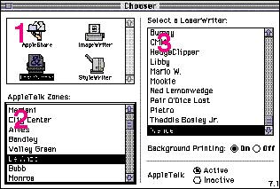
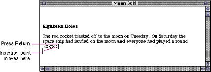
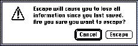

|
Character KeysCharacter keys include keys for letters, numbers, and punctuation, as well as the Space bar. If the user presses one of these keys while entering text, the corresponding character is added to the text. Nonprinting characters such as the Enter, Tab, Return, Delete (or Backspace), Clear, and Escape (Esc) keys are also treated like character keys. Although the result of pressing one of these keys depends on the application and the context, it is essential that your application use them consistently, as described in the following paragraphs.EnterThe Enter key tells the application that the user is through entering information in a particular area of the document, such as a field in an array or table. Most applications add information to a document as soon as the user types or draws it. However, the application may need to wait until a whole collection of information is available before processing it. In this case, the user presses the Enter key to signal that the information is complete. The user can press Enter (like Return) to dismiss dialog boxes and alert boxes, if there is a default button. While the user is entering text into a text document, pressing Enter has no effect.TabIn text-oriented applications, the Tab key is used to move the insertion point to the next tab stop. In other contexts, Tab is a signal to proceed: it signals movement to the next item in a sequence, as shown in Figure 10-8. Pressing Tab often causes data to be entered before moving to the next item.Figure 10-8 Using the Tab key to cycle through fields  ReturnIn text, the Return key inserts a carriage return at the current insertion point. It moves the insertion point to the beginning of the next line, as shown in Figure 10-9. In arrays, the Return key signals movement to the leftmost field one step lower on the display (like a carriage return on a typewriter). Return (like Tab) can cause data to be entered before moving down a step. The user can press Return (like Enter) to dismiss dialog boxes and alert boxes, if there is a default button.Figure 10-9 Using the Return key to move the insertion point  Delete (or Backspace)The Delete (or Backspace) key deletes text or graphics. Generally, if a selection has been made, pressing Delete removes the selection without putting it in the Clipboard. If there is no selection, pressing Delete removes the character preceding the insertion point without putting it in the Clipboard. The Delete key has an effect like that of the Clear command in the Edit menu.You can support the keyboard combination Option-Delete to delete the word that contains the insertion point. Note that the Delete key is different from the Forward Delete key (labeled Del), which removes the character or selection following the insertion point. ClearThe Clear key has the same effect as the Clear command in the Edit menu; that is, it removes the selection from the document without putting it in the Clipboard. Because not all Macintosh keyboards have Clear keys, no application should ever require use of the Clear key.Escape |
|
|
The Escape (Esc) key has the general meaning "let me out of
here." It's a sort of panic button for the user. In certain
contexts its meaning is specific:
|
|
If an application absolutely requires a series of dialog
boxes, the user should be able to use Escape to move
backward through the boxes. However, you should avoid
getting into this situation for the reasons described in
Chapter 6,
"Dialog Boxes," in the section "Stacking Modal Dialog
Boxes" on page 190.
Pressing Escape should never cause the user to back out
of an operation Figure 10-10 A sample confirmation dialog box for the Escape key  |